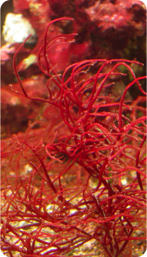

Varieties found in India
India boasts a rich diversity of seaweed species, with some of the most prominent varieties being:
Brown Seaweed
Sargassum
Brown Seaweed Of The Sargassum Genus Is Abundant Along The Indian Coastline. It Has Applications In The Production Of Fertilizers, Animal Feed, And Potential Biofuel Sources.

Green Seaweed
Ulva Prolifera
Ulva prolifera is a species of green sea weed that can be found in major coasts of India. This marine alga species is visually filamentous and intertwined together by accumulation after the algae bloom
